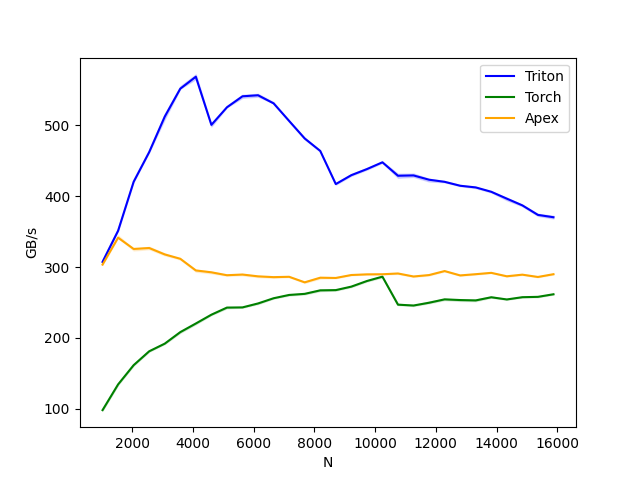

Note
Click here to download the full example code
Layer Normalization¶
Out:
layer-norm-backward:
N Triton Torch Apex
0 1024.0 307.200008 99.096776 307.200008
1 1536.0 351.085717 133.083026 338.201833
2 2048.0 423.724127 161.684218 334.367350
3 2560.0 458.507457 182.857144 328.556154
4 3072.0 511.999982 191.501303 320.556515
5 3584.0 551.384634 208.271186 308.301075
6 4096.0 568.231237 220.412561 298.796351
7 4608.0 495.928261 231.849059 286.507772
8 5120.0 522.893618 242.845844 283.787523
9 5632.0 536.380957 243.107920 291.310338
10 6144.0 542.117638 248.661056 286.322318
11 6656.0 525.473708 256.000009 286.279570
12 7168.0 505.976473 261.844750 288.160801
13 7680.0 481.253256 260.338991 277.172933
14 8192.0 460.440290 268.957600 286.600589
15 8704.0 416.958106 267.815384 284.987724
16 9216.0 428.651187 272.729961 289.507855
17 9728.0 438.857162 280.278512 288.950501
18 10240.0 446.836366 286.433562 290.153487
19 10752.0 428.651173 246.464170 289.941565
20 11264.0 429.104745 245.091565 285.767446
21 11776.0 421.826879 249.447482 288.686414
22 12288.0 420.102570 254.453844 294.911986
23 12800.0 415.135142 253.256381 289.811310
24 13312.0 412.242569 252.559690 290.179836
25 13824.0 404.604870 257.390218 292.571423
26 14336.0 397.761846 254.862216 286.242939
27 14848.0 383.999990 257.108233 289.012175
28 15360.0 374.253788 257.610071 287.326580
29 15872.0 366.982663 262.708969 291.006885
import torch
import triton.language as tl
import triton
# Forward Pass
@triton.jit
def _layer_norm_fwd_fused(X, Y, W, B, M, V, stride, N, eps, **META):
BLOCK_SIZE = META['BLOCK_SIZE']
# position of elements processed by this program
row = tl.program_id(0)
cols = tl.arange(0, BLOCK_SIZE)
mask = cols < N
# offset data pointers to start at the row of interest
X += row * stride
Y += row * stride
# load data and cast to float32
x = tl.load(X + cols, mask=mask, other=0).to(tl.float32)
# compute mean
mean = tl.sum(x, axis=0) / N
# compute std
xmean = tl.where(mask, x - mean, 0.)
var = tl.sum(xmean * xmean, axis=0) / N
rstd = 1 / tl.sqrt(var + eps)
xhat = xmean*rstd
# write-back mean/rstd
tl.store(M + row, mean)
tl.store(V + row, rstd)
# multiply by weight and add bias
w = tl.load(W + cols, mask=mask)
b = tl.load(B + cols, mask=mask)
y = xhat * w + b
# write-back
tl.store(Y + cols, y, mask=mask)
# Backward pass (DX + partial DW + partial DB)
@triton.jit
def _layer_norm_bwd_dx_fused(DX, DY, DW, DB, X, W, B, M, V, Lock,
stride, N, eps,
**META):
GROUP_SIZE_M = META['GROUP_SIZE_M']
BLOCK_SIZE_N = META['BLOCK_SIZE_N']
# position of elements processed by this program
row = tl.program_id(0)
cols = tl.arange(0, BLOCK_SIZE_N)
mask = cols < N
# offset data pointers to start at the row of interest
X += row * stride
DY += row * stride
DX += row * stride
# offset locks and weight/bias gradient pointer
# each kernel instance accumulates partial sums for
# DW and DB into one of GROUP_SIZE_M independent buffers
# these buffers stay in the L2, which allow this kernel
# to be fast
lock_id = row % GROUP_SIZE_M
Lock += lock_id
Count = Lock + GROUP_SIZE_M
DW = DW + lock_id*N + cols
DB = DB + lock_id*N + cols
# load data to SRAM
x = tl.load(X + cols, mask=mask, other=0).to(tl.float32)
dy = tl.load(DY + cols, mask=mask, other=0).to(tl.float32)
w = tl.load(W + cols, mask=mask).to(tl.float32)
mean = tl.load(M + row)
rstd = tl.load(V + row)
# compute dx
xhat = (x - mean)*rstd
wdy = w * dy
xhat = tl.where(mask, xhat, 0.)
wdy = tl.where(mask, wdy , 0.)
mean1 = tl.sum(xhat * wdy, axis=0) / N
mean2 = tl.sum(wdy, axis=0) / N
dx = (wdy - (xhat*mean1 + mean2))*rstd
# write-back dx
tl.store(DX + cols, dx, mask=mask)
# accumulate partial sums for dw/db
partial_dw = (dy*xhat).to(w.dtype)
partial_db = (dy).to(w.dtype)
while tl.atomic_cas(Lock, 0, 1) == 1:
pass
count = tl.load(Count)
# first store doesn't accumulate
if count == 0:
tl.atomic_xchg(Count, 1)
else:
partial_dw += tl.load(DW, mask=mask)
partial_db += tl.load(DB, mask=mask)
tl.store(DW, partial_dw, mask=mask)
tl.store(DB, partial_db, mask=mask)
# release lock
tl.atomic_xchg(Lock, 0)
# Backward pass (total DW + total DB)
@triton.jit
def _layer_norm_bwd_dwdb(DW, DB, FINAL_DW, FINAL_DB, M, N, **meta):
pid = tl.program_id(0)
BLOCK_SIZE_M = meta['BLOCK_SIZE_M']
BLOCK_SIZE_N = meta['BLOCK_SIZE_N']
cols = pid*BLOCK_SIZE_N + tl.arange(0, BLOCK_SIZE_N)
dw = tl.zeros((BLOCK_SIZE_M, BLOCK_SIZE_N), dtype=tl.float32)
db = tl.zeros((BLOCK_SIZE_M, BLOCK_SIZE_N), dtype=tl.float32)
for i in range(0, M, BLOCK_SIZE_M):
rows = i + tl.arange(0, meta['BLOCK_SIZE_M'])
mask = (rows[:, None] < M) & (cols[None, :] < N)
offs = rows[:, None]*N + cols[None, :]
dw += tl.load(DW + offs, mask=mask, other=0.)
db += tl.load(DB + offs, mask=mask, other=0.)
sum_dw = tl.sum(dw, axis=0)
sum_db = tl.sum(db, axis=0)
tl.store(FINAL_DW + cols, sum_dw, mask=cols<N)
tl.store(FINAL_DB + cols, sum_db, mask=cols<N)
class LayerNorm(torch.autograd.Function):
@staticmethod
def forward(ctx, x, normalized_shape, weight, bias, eps):
# allocate output
y = torch.empty_like(x)
# reshape input data into 2D tensor
x_arg = x.reshape(-1, x.shape[-1])
M, N = x_arg.shape
mean = torch.empty((M, ), dtype=torch.float32, device='cuda')
rstd = torch.empty((M, ), dtype=torch.float32, device='cuda')
# Less than 64KB per feature: enqueue fused kernel
MAX_FUSED_SIZE = 65536 // x.element_size()
BLOCK_SIZE = min(MAX_FUSED_SIZE, triton.next_power_of_2(N))
if N > BLOCK_SIZE:
raise RuntimeError("This layer norm doesn't support feature dim >= 64KB.")
# heuristics for number of warps
num_warps = min(max(BLOCK_SIZE // 256, 1), 8)
# enqueue kernel
_layer_norm_fwd_fused[(M,)](x_arg, y, weight, bias, mean, rstd,
x_arg.stride(0), N, eps,
BLOCK_SIZE=BLOCK_SIZE, num_warps=num_warps)
ctx.save_for_backward(x, weight, bias, mean, rstd)
ctx.BLOCK_SIZE = BLOCK_SIZE
ctx.num_warps = num_warps
ctx.eps = eps
return y
@staticmethod
def backward(ctx, dy):
x, w, b, m, v = ctx.saved_tensors
# heuristics for amount of parallel reduction stream for DG/DB
N = w.shape[0]
GROUP_SIZE_M = 64
if N <= 8192: GROUP_SIZE_M = 96
if N <= 4096: GROUP_SIZE_M = 128
if N <= 1024: GROUP_SIZE_M = 256
# allocate output
locks = torch.zeros(2*GROUP_SIZE_M, dtype=torch.int32, device='cuda')
_dw = torch.empty((GROUP_SIZE_M, w.shape[0]), dtype=x.dtype, device=w.device)
_db = torch.empty((GROUP_SIZE_M, w.shape[0]), dtype=x.dtype, device=w.device)
dw = torch.empty((w.shape[0],), dtype=w.dtype, device=w.device)
db = torch.empty((w.shape[0],), dtype=w.dtype, device=w.device)
dx = torch.empty_like(dy)
# enqueue kernel using forward pass heuristics
# also compute partial sums for DW and DB
x_arg = x.reshape(-1, x.shape[-1])
M, N = x_arg.shape
_layer_norm_bwd_dx_fused[(M,)](dx, dy, _dw, _db, x, w, b, m, v, locks,
x_arg.stride(0), N, ctx.eps,
BLOCK_SIZE_N=ctx.BLOCK_SIZE,
GROUP_SIZE_M=GROUP_SIZE_M,
num_warps=ctx.num_warps)
grid = lambda meta: [triton.cdiv(N, meta['BLOCK_SIZE_N'])]
# accumulate partial sums in separate kernel
_layer_norm_bwd_dwdb[grid](_dw, _db, dw, db, GROUP_SIZE_M, N,
BLOCK_SIZE_M = 32,
BLOCK_SIZE_N = 128)
return dx, None, dw, db, None
layer_norm = LayerNorm.apply
def test_layer_norm(M, N, dtype, eps=1e-5, device='cuda'):
# create data
x_shape = (M, N)
w_shape = (x_shape[-1], )
weight = torch.rand(w_shape, dtype=dtype, device='cuda', requires_grad=True)
bias = torch.rand(w_shape, dtype=dtype, device='cuda', requires_grad=True)
x = -2.3 + 0.5*torch.randn(x_shape, dtype=dtype, device='cuda')
dy = .1*torch.randn_like(x)
x.requires_grad_(True)
# forward pass
y_tri = layer_norm(x, w_shape, weight, bias, eps)
y_ref = torch.nn.functional.layer_norm(x, w_shape, weight, bias, eps).to(dtype)
# backward pass (triton)
y_tri.backward(dy, retain_graph=True)
dx_tri, dw_tri, db_tri = [_.grad.clone() for _ in [x, weight, bias]]
x.grad, weight.grad, bias.grad = None, None, None
# backward pass (torch)
y_ref.backward(dy, retain_graph=True)
dx_ref, dw_ref, db_ref = [_.grad.clone() for _ in [x, weight, bias]]
# compare
triton.testing.assert_almost_equal(y_tri, y_ref)
triton.testing.assert_almost_equal(dx_tri, dx_ref)
triton.testing.assert_almost_equal(db_tri, db_ref, decimal=1)
triton.testing.assert_almost_equal(dw_tri, dw_ref, decimal=1)
@triton.testing.perf_report(
triton.testing.Benchmark(
x_names=['N'],
x_vals=[512 * i for i in range(2, 32)],
line_arg='provider',
line_vals=['triton', 'torch', 'apex'],
line_names=['Triton', 'Torch', 'Apex'],
styles=[('blue', '-'), ('green', '-'), ('orange', '-')],
ylabel='GB/s',
plot_name='layer-norm-backward',
args={'M': 4096, 'dtype': torch.float16, 'mode': 'backward'}
)
)
def bench_layer_norm(M, N, dtype, provider, mode='backward',eps=1e-5, device='cuda'):
# create data
x_shape = (M, N)
w_shape = (x_shape[-1], )
weight = torch.rand(w_shape, dtype=dtype, device='cuda', requires_grad=True)
bias = torch.rand(w_shape, dtype=dtype, device='cuda', requires_grad=True)
x = -2.3 + 0.5*torch.randn(x_shape, dtype=dtype, device='cuda')
dy = .1*torch.randn_like(x)
x.requires_grad_(True)
# utility functions
if provider == 'triton':
y_fwd = lambda: layer_norm(x, w_shape, weight, bias, eps)
if provider == 'torch':
y_fwd = lambda: torch.nn.functional.layer_norm(x, w_shape, weight, bias, eps)
if provider == 'apex':
import apex
apex_layer_norm = apex.normalization.FusedLayerNorm(w_shape).to(x.device).to(x.dtype)
y_fwd = lambda: apex_layer_norm(x)
# forward pass
if mode == 'forward':
gbps = lambda ms: 2*x.numel()*x.element_size()/ms*1e-6
ms, min_ms, max_ms = triton.testing.do_bench(y_fwd, rep=500)
# backward pass
if mode == 'backward':
gbps = lambda ms: 3*x.numel()*x.element_size()/ms*1e-6
y = y_fwd()
ms, min_ms, max_ms = triton.testing.do_bench(lambda: y.backward(dy, retain_graph=True),
grad_to_none=[x], rep=500)
return gbps(ms), gbps(max_ms), gbps(min_ms)
bench_layer_norm.run(save_path='.', print_data=True)
Total running time of the script: ( 2 minutes 11.692 seconds)